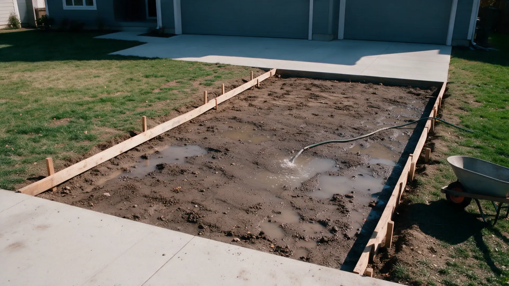
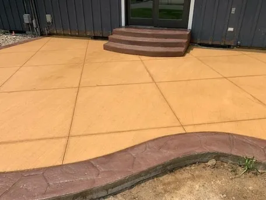
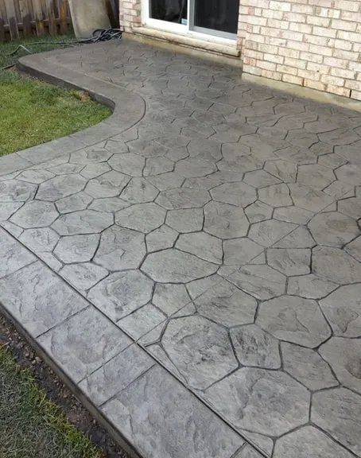
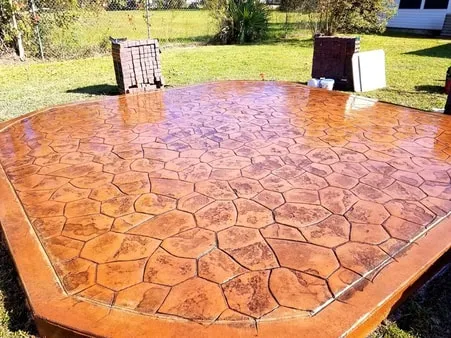
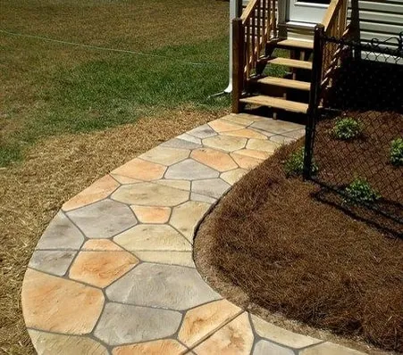
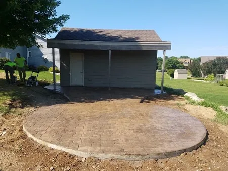
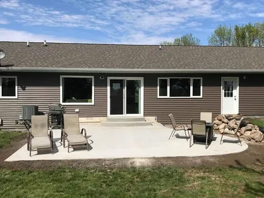

Concrete doesn't do second chances.
Surprise Concrete Concepts pours patios, driveways, walkways and slabs in Surprise, AZ and nearby. Done right, the first time.
A truck of concrete gives you about ninety minutes.
Then it starts to set. No undo. No second pour.
Skip the prep, add a little water, rush the finish, and you'll see it in the cracks for years.
This is not a weekend project.


The rushed driveway
Water on the base, a hose in the form.
A wet, loose base settles. The slab on top of it follows.
Soupy mix, poured fast.
Extra water makes concrete easy to place and much weaker once it cures.
Then the cracks show up.
No steel, no planned joints, so the slab picks its own places to break.
And then comes the teardown bill.
Breaking out and re-pouring costs more than doing it right once.

Same driveway. Which crew do you want?


The right way
Same job. Done by pros.
- Compacted gravel base, graded to drain
- Rebar on chairs, so steel sits where it belongs
- Mix ordered for the job. No water added on site
- Placed, screeded and floated on schedule
- Joints cut and the slab cured, not left to chance
Poured right. On schedule.
- Free consultation and bid
- 5.0 stars from 7 Google reviews
What we pour.
Nine kinds of concrete work. Pick one to see how we approach it.
Stamped Concrete
Stamped patterns and color for patios, driveways, steps and pool decks.
See how we do itDriveway Repair & Installation
New driveways, replacements, crack repair, extensions and RV access.
See how we do itPatio
Poured and stamped patios, patio extensions and covered seating areas.
See how we do itWalkways & Steps
Concrete walkways, pathways and steps, plain or colored.
See how we do itConcrete Slabs
Slab pouring for patios, pads, walkways, foundations and sheds.
See how we do itPaving
Paver installs and masonry, for a more decorative look than plain concrete.
See how we do itRetaining Wall
Block, stone, brick and concrete walls, from garden walls to engineered walls.
See how we do itFire Pit
Fire pits with veneered concrete seating walls, built into a patio.
See how we do itPool Deck
New and refreshed concrete pool decks, plain or stamped.
See how we do itNot sure which one you need?
Our work.
A few recent pours. Ask us for more near you.






How we keep it honest.
Concrete is hard to judge until it's too late to change. So we put the important parts in front of you early.
-
A free bid.
Call and we will come out for a free consultation and a free bid on your job.
-
We look at your site first.
How much material, how we get to the site and how much grading and prep it needs all go into the bid.
-
Friendly from the first call.
You talk to the company that does the work, and we keep you posted on what is happening.
-
Not on our list? Call.
We work Surprise and the nearby cities and will make a special trip if you are a little farther out.
Local concrete, finished by hand.
Surprise Concrete Concepts is a concrete contractor in Surprise, AZ. We pour patios, walkways, driveways, slabs and pool decks, and we build retaining walls and fire pits.
Homeowners look at a company's reputation, its past work and its customer service. We work on all three, and we are glad to talk through your project on the phone before anyone drives out.
- Phone
- (623) 526-2767
- Based in
- Surprise, AZ
- Quotes
- Free consultation and bid
Where we work.
Serving Surprise and the West Valley and the towns around it.
- Surprise
- Glendale
- Peoria
- Sun City
- Sun City West
- Waddell
- Wittmann
- Litchfield Park
Not on the list? Call. We can make a special trip to install concrete outside these cities.
Call (623) 526-2767What customers say.
Hover a bubble to read it.Tap a bubble to read it.
5.0 average from 7 reviews. Read them on Google
The crew at Concrete Concepts poured a pool patio extension for us a few weeks ago. They went the extra mile to ensure it turned out how we wanted. They even informed me about an irrigation leak that I had no clue about.
I have had this large crack in my driveway for almost 5 years now and it has continued to grow. Marcos walked me through the process and was very knowledgeable. They removed that pesky root and poured a beautiful new concrete driveway for me.
Marcos with Surprise Concrete Concepts was fantastic to work with throughout the process. He was professional, responsive and showed up after everything was done to fix a drain that had a little issue.
Booking is simple.
-
Call or send the form
Tell us what you want poured and where.
-
Free consultation
We come to your house and look at the site together.
-
You get a bid
We price it from the amount of concrete, access and prep the job needs.
-
We pour and finish
Prep, forms, pour and finish.
Questions we hear a lot.
How long until I can walk or drive on new concrete?
Most slabs take foot traffic after about a day or two. Cars and light trucks usually wait around seven days. Concrete keeps gaining strength for roughly 28 days, so ask us for dates on your job.
Can concrete be poured in Surprise summers?
Yes, with a plan. In Arizona heat concrete sets fast, so pours are timed early, the surface is kept from drying too quickly, and enough hands are on site to finish before it stiffens.
How do you price a job?
We look at the amount of concrete, how we can get to the site and how much grading and prep the area needs. Then you get a free bid.
Do you do decorative finishes?
Yes. Stamped, stained, colored and polished concrete are all on our list, as well as a plain gray broom finish.
Do I need a permit?
It depends on the job. Structural work and taller walls usually do. Ask us when you call and we will tell you what applies to your project.
Should concrete be sealed?
Decorative and colored concrete usually is, and a sealer is worth asking about on any surface in full Arizona sun. We will talk through the options on your job.
Ready when you are.
Call us for a free bid, or send the details and we will get back to you.